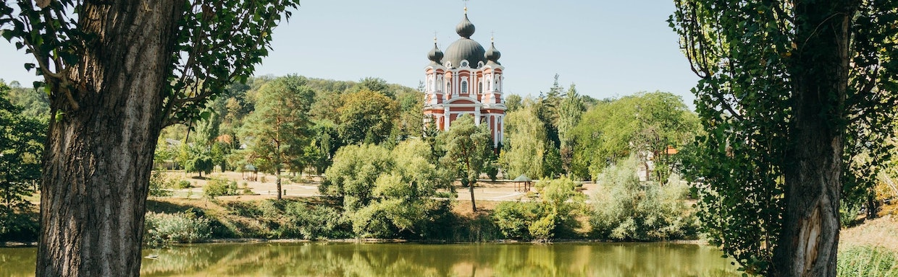
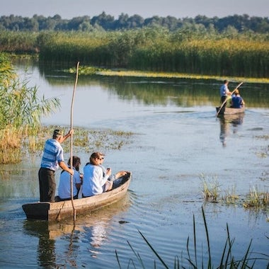
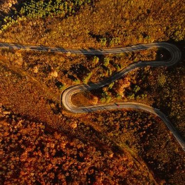
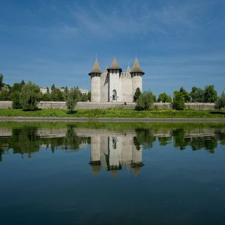
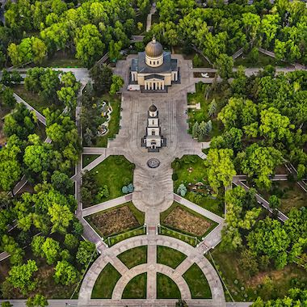
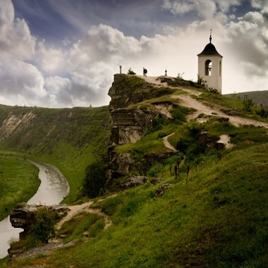
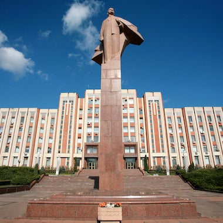

 |  |  |
|---|---|---|
| Sudul Moldovei | Centrul Moldovei | Nordul Moldovei |
| Explorează sate pline de tradiţii şi gastronomie autentică. Vizitează Lacul Beleu sau degustă vinuri locale în cramele mici şi primitoare. Sudul Moldovei îţi oferă experienţe de neuitat în mijlocul naturii. | Descoperă oraşe istorice şi peisaje relaxante. Poţi vizita Orhei, Străşeni sau păduri liniştite pentru drumeţii. Centrul te încântă cu combinaţia perfectă între cultură şi natură. | Regiune cu păduri dense şi rezervaţii naturale spectaculoase. Nu rata Lacul Dracului sau Rezervaţia "Pădurea Domnească". Nordul este locul ideal pentru aventură şi relaxare în aer liber. |
 |  |  |
| Oraşul Chişinău | Orheiul Vechi | Regiunea transnistreană |
| Capitala vibrantă a Moldovei, cu parcuri verzi şi muzee interesante. Descoperă Piaţa Centrală, Grădina Publică "Ştefan cel Mare" sau muzeele de artă şi istorie. Chişinău combină modernul cu tradiţionalul într-un mod unic. | Un loc unde istoria şi natura se întâlnesc spectaculos. Explorează mănăstirile rupestre şi peisajele impresionante de pe malul Răutului. Orheiul Vechi te poartă într-o călătorie în timp. | O zonă cu un farmec aparte şi tradiţii aparte. Vizitează Tiraspolul istoric, cetăţile vechi şi satele pitoreşti de pe malul Nistrului. Transnistria oferă o experienţă diferită, plină de surprize culturale. |
| Cum să vă planificaţi călătoria în Moldova |
|---|
| Este mai uşor şi mai rapid să vizitaţi Moldova decât v-aţi putea imagina datorită numărului tot mai mare de zboruri directe, trenuri şi autobuze. În doar două-trei ore de la Londra, Berlin, Paris, Roma, München sau Istanbul puteţi ajunge pe aeroportul din Chişinău şi puteţi începe să exploraţi Moldova. Pasionaţii de tren pot lua trenul de noapte de la Bucureşti sau Kiev spre Chişinău. |
| Articolele de mai sus oferă o mulţime de informaţii despre lucrurile de explorat în Moldova, atracţiile turistice, vinăriile , trasee de drumeţie şi multe altele pentru a facilita călătorilor independenţi cercetarea şi rezervarea călătoriei lor în Moldova. Pentru cei dintre dvs. care ar prefera ca cineva să vă ajute cu un itinerar individual şi să se ocupe de toată logistica vă putem recomanda una dintre următoarele agenţii de turism locale şi operatori de turism. De asemenea, puteţi găsi un ghid local cu specializare în istorie, cultură, natură, vin, mâncare şi alte subiecte. |
| Aşteptăm cu nerăbdare să vizitaţi Moldova |
| Bibliografie | |
|---|---|
| Inspiraţie | Moldova.travel |
| Cunoştinţe | Materialul primit pe Classroom |
| Aspecte |
|